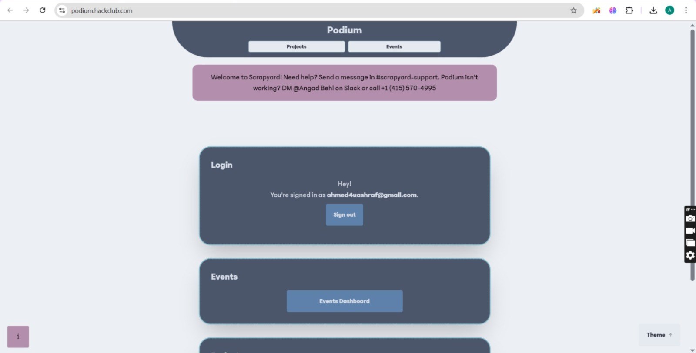
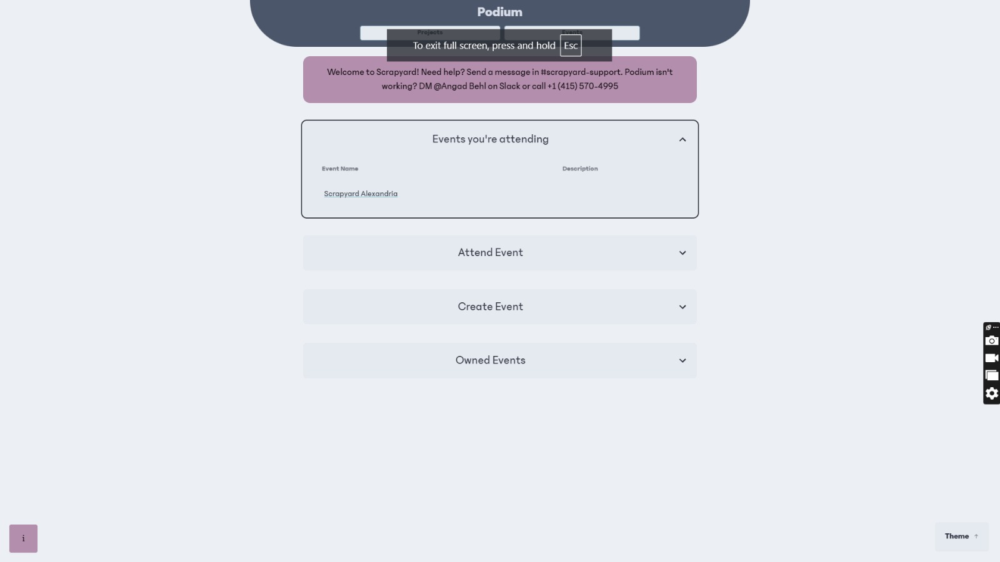
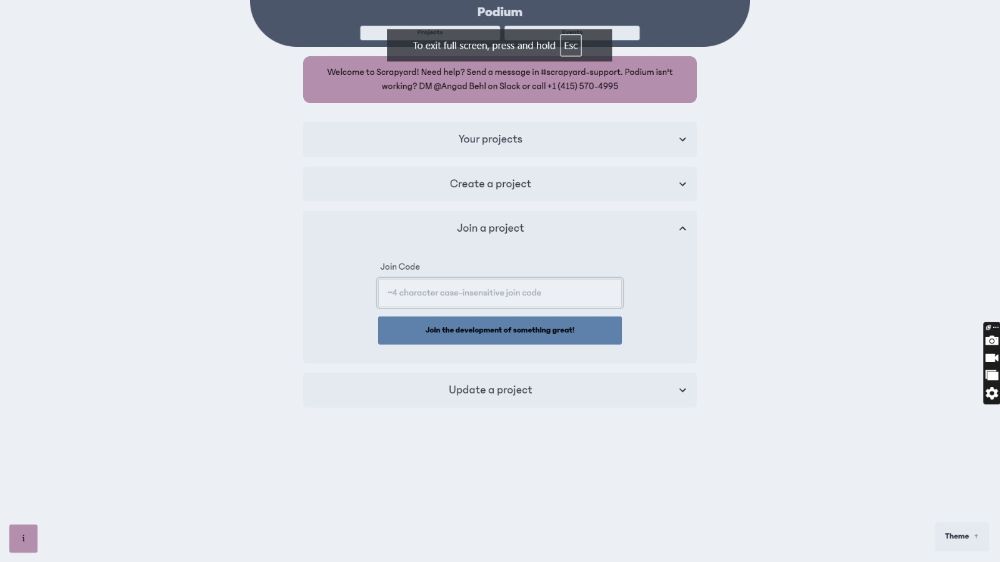

Voting Steps
1-open this link on your laptop/computer: click here
2-write your email then click (signup/login) a link will be sent to you on your email to signup/login:
3-after you signup/login this page will appear to you (click events on top righ):

4-click join event and write (UMFL) and click join the adventure:
5-refresh and you will see scrapyard alexandria under attended events

6-then click projects on top left
7-then click create project
8-then create project if anyone if your team hasn't
9-if there is one in your team who created the project ask them for join code ,the one who created the project should see it under your projects

10-write the join code in join a project

11-click on events on top right then you will see this page click on events you are attending
12-then click on scrapyard alexandria
13-then click on rank projects
14-select the best 2 projects (notice that thoughty is KVM'S project)
15-click submit vote at the end of the page